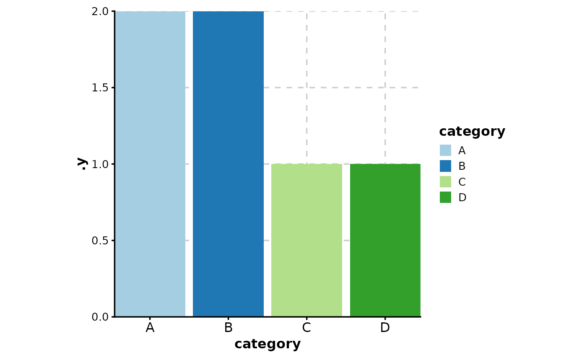
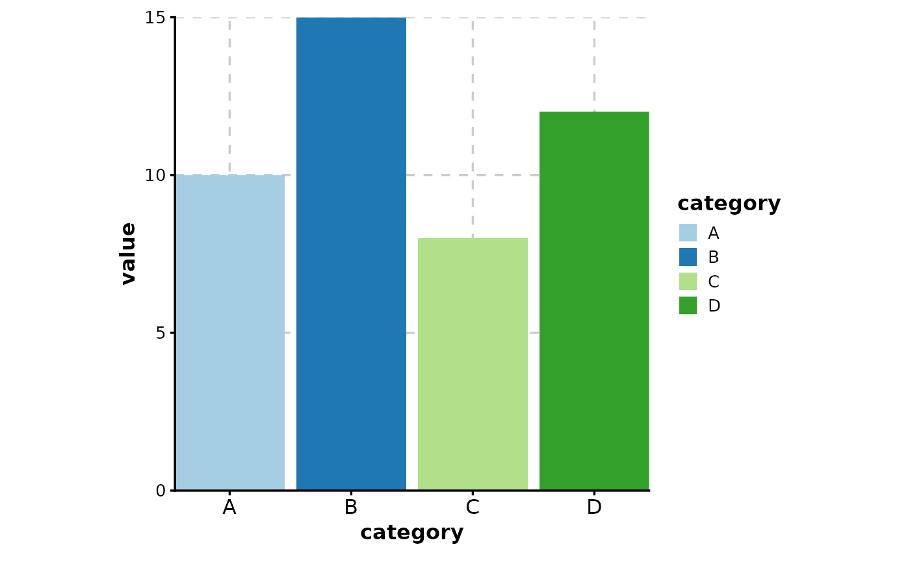
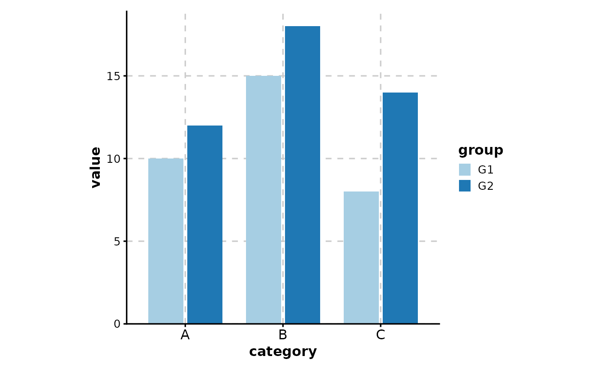
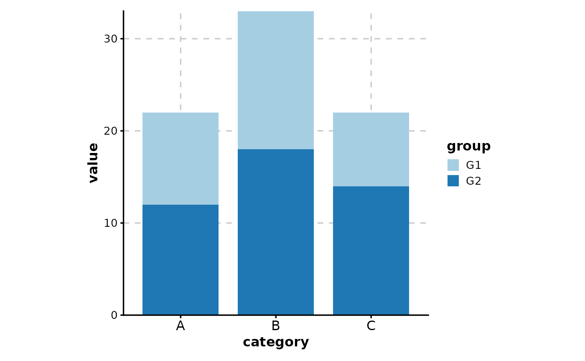
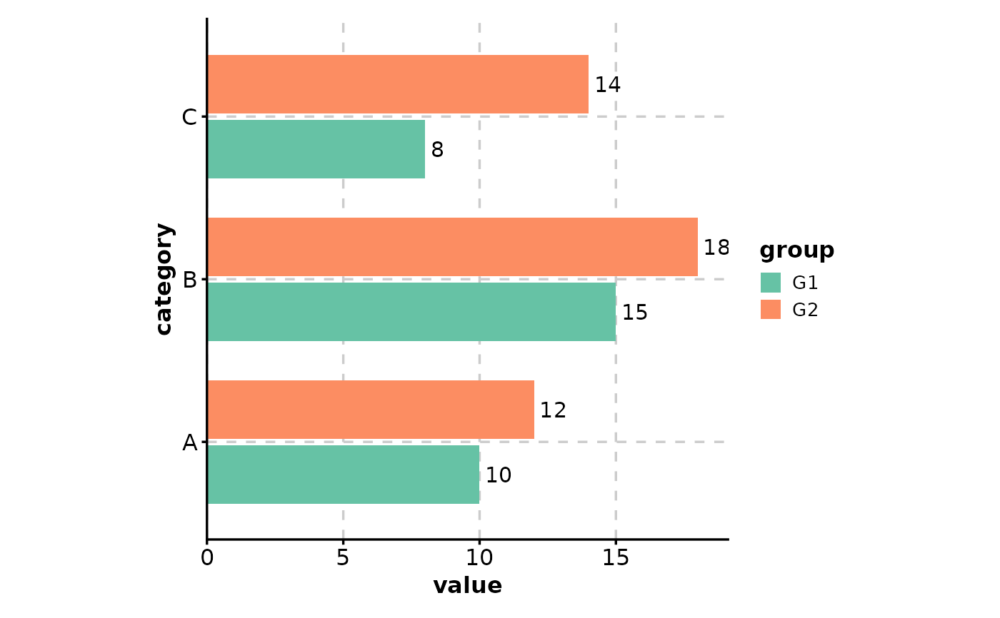
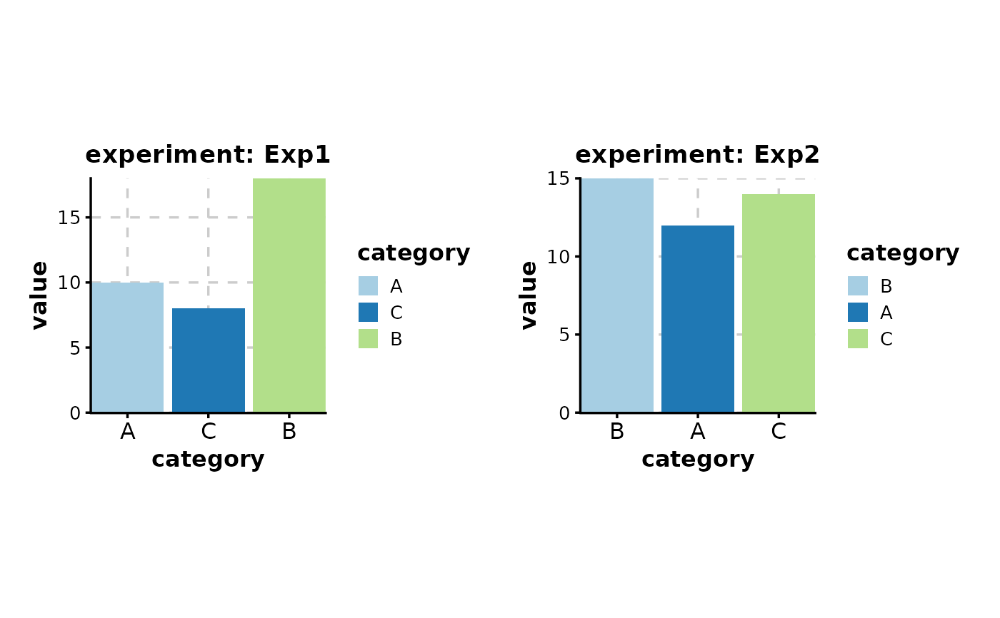
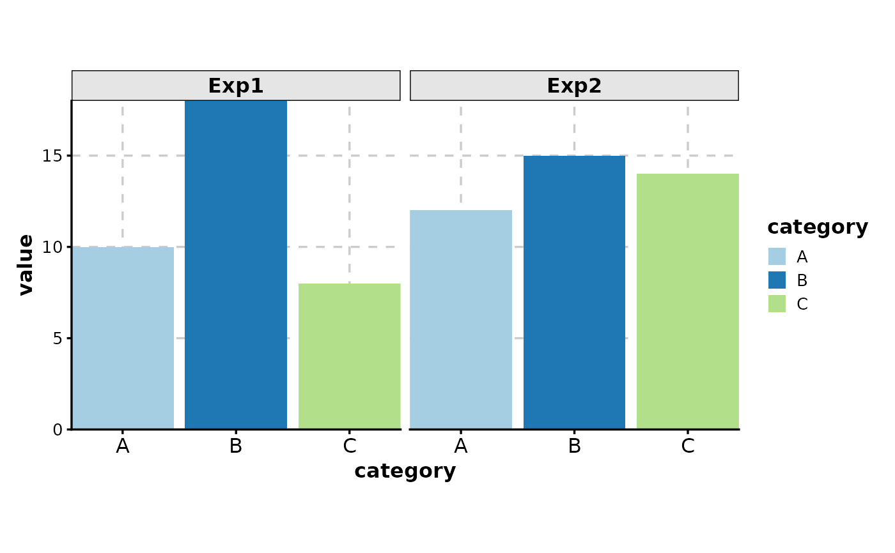

Create a bar plot with optional grouping, splitting, and faceting.
Bar plots are useful for comparing values across categories. This function supports both simple bar plots and grouped bar plots with stacking or dodging.
Usage
BarPlot(
data,
x,
x_sep = "_",
y = NULL,
scale_y = FALSE,
flip = FALSE,
group_by = NULL,
group_by_sep = "_",
group_name = NULL,
fill_by_x_if_no_group = TRUE,
split_by = NULL,
split_by_sep = "_",
facet_by = NULL,
facet_scales = "fixed",
facet_ncol = NULL,
facet_nrow = NULL,
facet_byrow = TRUE,
label = NULL,
label_nudge = 0.02,
label_fg = "black",
label_size = 4,
label_bg = "white",
label_bg_r = 0.1,
add_bg = FALSE,
bg_palette = "stripe",
bg_palcolor = NULL,
bg_alpha = 0.2,
add_line = NULL,
line_color = "red2",
line_width = 0.6,
line_type = 2,
line_name = NULL,
add_trend = FALSE,
trend_color = "black",
trend_linewidth = 1,
trend_ptsize = 2.5,
theme = "theme_ggforge",
theme_args = list(),
palette = "Paired",
palcolor = NULL,
alpha = 1,
x_text_angle = 0,
aspect.ratio = 1,
y_min = NULL,
y_max = NULL,
position = "auto",
position_dodge_preserve = "total",
legend.position = "right",
legend.direction = "vertical",
title = NULL,
subtitle = NULL,
xlab = NULL,
ylab = NULL,
keep_empty = FALSE,
expand = waiver(),
width = waiver(),
combine = TRUE,
nrow = NULL,
ncol = NULL,
byrow = TRUE,
seed = 8525,
axes = NULL,
axis_titles = axes,
guides = NULL,
design = NULL,
...
)Arguments
- data
A data frame containing the data to plot
- x
Column for x-axis (categorical). Will be converted to factor.
- x_sep
Separator for concatenating multiple x columns.
- y
Column for y-axis (numeric). If NULL, counts will be used.
- scale_y
Scale y values to proportions within each x group (only for grouped plots).
- flip
Flip x and y axes.
- group_by
Column(s) for grouping bars (creates stacked or dodged bars).
- group_by_sep
Separator for concatenating multiple group columns.
- group_name
Legend title for groups.
- fill_by_x_if_no_group
Fill bars by x values when no grouping (default TRUE).
- split_by
Column name(s) to split data into multiple plots
- split_by_sep
Separator when concatenating multiple split_by columns
- facet_by
Column name(s) for faceting the plot
- facet_scales
Scales for facets: "fixed", "free", "free_x", "free_y"
- facet_ncol
Number of columns in facet layout
- facet_nrow
Number of rows in facet layout
- facet_byrow
Fill facets by row (TRUE) or column (FALSE)
- label
Column to use for labels, or TRUE to use y values.
- label_nudge
Vertical distance for label positioning.
- label_fg
Label text color.
- label_size
Label text size.
- label_bg
Label background color.
- label_bg_r
Label background corner radius.
- add_bg
Add background stripes for x categories.
- bg_palette
Palette for background stripes.
- bg_palcolor
Custom colors for background stripes.
- bg_alpha
Transparency for background stripes.
- add_line
Add horizontal reference line at specified y value.
- line_color
Color of reference line.
- line_width
Width of reference line.
- line_type
Line type (1=solid, 2=dashed, etc.).
- line_name
Legend label for reference line.
- add_trend
Add trend line connecting bar tops.
- trend_color
Color of trend line (NULL uses group colors).
- trend_linewidth
Width of trend line.
- trend_ptsize
Size of trend line points.
- theme
Theme name (string) or theme function
- theme_args
List of arguments passed to theme function
- palette
Color palette name
- palcolor
Custom colors for palette
- alpha
Transparency level (0-1)
- x_text_angle
Angle for x-axis text labels
- aspect.ratio
Aspect ratio of plot panel
- y_min
Minimum y-axis value.
- y_max
Maximum y-axis value.
- position
Position adjustment: "auto", "stack", "dodge", or "fill".
- position_dodge_preserve
Preserve "total" or "single" width when dodging.
- legend.position
Legend position: "none", "left", "right", "bottom", "top"
- legend.direction
Legend direction: "horizontal" or "vertical"
- title
Plot title
- subtitle
Plot subtitle
- xlab
X-axis label
- ylab
Y-axis label
- keep_empty
Keep empty factor levels
- expand
Plot area expansion (CSS-like: top, right, bottom, left).
- width
Bar width.
- combine
Whether to combine split plots into one
- nrow
Number of rows when combining plots
- ncol
Number of columns when combining plots
- byrow
Fill combined plots by row
- seed
Random seed for reproducibility
- axes
How to handle axes in combined plots ("keep", "collect", "collect_x", "collect_y")
- axis_titles
How to handle axis titles in combined plots
- guides
How to handle guides in combined plots ("collect", "keep", "auto")
- design
Custom layout design for combined plots
Examples
# \donttest{
# Simple bar plot (counts)
data <- data.frame(
category = c("A", "B", "C", "D", "A", "B")
)
BarPlot(data, x = "category")

# Bar plot with values
data <- data.frame(
category = c("A", "B", "C", "D"),
value = c(10, 15, 8, 12)
)
BarPlot(data, x = "category", y = "value")

# Grouped bar plot (dodged)
data <- data.frame(
category = rep(c("A", "B", "C"), 2),
value = c(10, 15, 8, 12, 18, 14),
group = rep(c("G1", "G2"), each = 3)
)
BarPlot(data, x = "category", y = "value", group_by = "group")

# Stacked bar plot
BarPlot(data, x = "category", y = "value", group_by = "group", position = "stack")

# With labels and customization
BarPlot(
data,
x = "category", y = "value", group_by = "group",
label = TRUE, palette = "Set2", flip = TRUE
)

# With splits (multiple plots)
data$experiment <- rep(c("Exp1", "Exp2"), 3)
BarPlot(data, x = "category", y = "value", split_by = "experiment")

# With faceting (single plot, multiple panels)
BarPlot(data, x = "category", y = "value", facet_by = "experiment")

# }